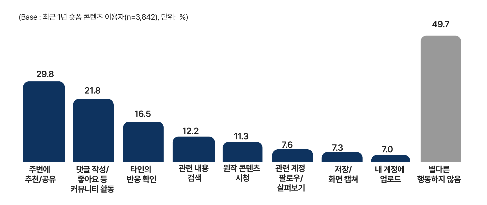
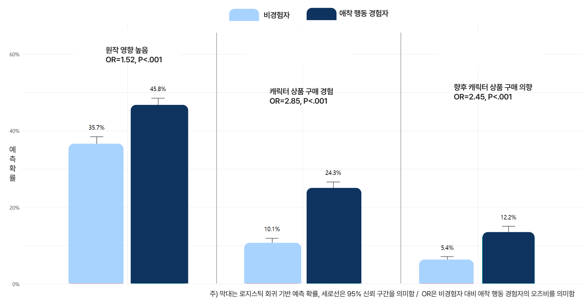
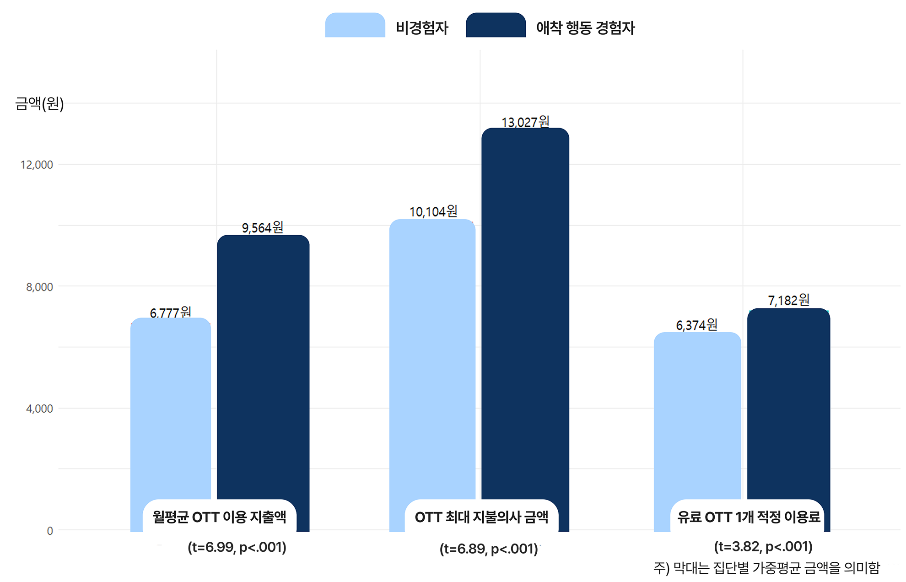

숏폼은 빠르게 보고 넘기는 콘텐츠로 여겨진다. 이용자는 몇 초 만에 영상을 판단하고, 흥미가 떨어지면 곧바로 다른 콘텐츠로 이동한다. 이런 특성 때문에 숏폼은 휘발적 주목을 얻는 포맷, 또는 이용자를 본편으로 유입시키기 위한 홍보용 클립으로 이해되는 경우가 많다. 그러나 숏폼 콘텐츠를 친구에게 공유하고, 댓글을 달고, 다른 사람의 반응을 확인하고, 관련 내용을 검색하고, 원작 콘텐츠를 찾아보는 행동은 숏폼 콘텐츠 시청이 후속 관계로 이어지고 있음을 보여준다.
한국콘텐츠진흥원이 2026년 콘텐츠산업 전망 키워드로 제시한 ‘애착자본’도 이 지점에서 의미를 갖는다. 애착자본은 특정 콘텐츠나 IP에 대해 이용자가 쌓아가는 정서적 유대와 행동적 관여의 축적으로 이해할 수 있다. 좋아한다는 감정은 다시 보기, 검색, 공유, 구매, 다른 콘텐츠로의 이동 같은 행동으로 나타날 때 경제적·산업적 자산으로서 가치를 갖게 된다. 따라서 숏폼 콘텐츠를 본 뒤 어떤 행동으로 이어졌는가를 살펴보는 것은 애착자본의 형성 가능성을 이해하는 유용한 단서가 된다.
한국콘텐츠진흥원(2025)의 <2025 콘텐츠 이용행태 조사>에서 숏폼 콘텐츠 시청 후 행동을 살펴본 결과, ‘별다른 행동을 하지 않음’이 49.7%로 가장 높았다. 이는 숏폼이 ‘보고 넘기는 콘텐츠’라는 인식에 일정한 근거가 있음을 보여준다. 그러나 나머지 응답자 50.3%의 행동은 다양했다. '친구·지인에게 추천 또는 공유'(29.8%), '댓글 작성·좋아요 등 커뮤니티 활동'(21.8%), '타인의 반응 확인'(16.5%), '관련 내용 검색'(12.2%), '원작 콘텐츠 시청'(11.3%), '관련 계정 팔로우 또는 살펴보기'(7.6%) 순으로 나타났다.

[그림 1] 숏폼 콘텐츠 시청 후 행동
(출처: 한국콘텐츠진흥원(2025). <2025 콘텐츠 이용행태 조사>)
이 글에서는 숏폼 콘텐츠를 본 뒤 능동적인 후속 행동을 한 이용자를 ‘애착 행동 경험자’로 정의하였다. 이들이 시청 후 별다른 행동을 하지 않은 이용자와 어떤 차이를 보이는지 살펴보면 숏폼 콘텐츠가 이용자와 관계를 형성하는 방식을 보다 구체적으로 이해할 수 있다.
숏폼 시청 후 행동이 중요한 이유는 그것이 IP 소비 가능성과도 관련되기 때문이다. 본 분석에서는 애착 행동 경험자와 비경험자를 구분해 원작 영향력, 캐릭터 상품 구매 경험, 향후 캐릭터 상품 구매 의향에서 어떤 차이가 나타나는지 살펴보았다.
로지스틱 회귀분석을 통해 두 집단의 예측확률을 분석한 결과, 애착 행동 경험자는 비경험자보다 IP 소비 관련 지표에서 일관되게 높은 값을 보였다. 애착 행동 경험자는 비경험자에 비해 콘텐츠 선택 시 원작의 영향을 높게 받을 가능성이 1.52배, 캐릭터 상품 구매 경험이 있을 가능성이 2.85배, 향후 캐릭터 상품 구매 의향을 보일 가능성이 2.45배 높게 나타났다. 세 결과 모두 통계적으로 유의했다.

[그림 2] 숏폼 시청 후 행동 여부에 따른 IP 소비 가능성
(출처: 한국콘텐츠진흥원(2025). <2025 콘텐츠 이용행태 조사> 원자료 분석)
특히 차이가 크게 나타난 지표는 캐릭터 상품 구매 경험이다. 숏폼 콘텐츠를 본 뒤 검색하거나 공유하거나 원작을 찾아본 이용자는 콘텐츠 IP에 더 민감하게 반응하고, 실제 상품 소비와도 더 강하게 연결될 가능성이 확인된 것이다. 다만 이 결과는 숏폼 시청 후 행동이 구매 행동을 직접적으로 유발한다는 인과관계를 의미하지는 않는다. 이번 분석은 인과관계 검증이 아니라 집단 간 차이를 확인한 것이다. 그럼에도 불구하고 애착 행동 경험자 집단에서 원작 영향력, 캐릭터 상품 구매 경험, 향후 구매 의향이 모두 높게 나타났다는 사실은 숏폼이 콘텐츠와 이용자 사이의 관계를 형성하는 접점으로 기능할 수 있음을 보여준다.
애착 행동 경험자는 OTT 이용 지출과 지불 의사에서도 비경험자보다 높은 수치를 보였다. 월평균 OTT 이용 지출액은 비경험자 6,777원, 애착 행동 경험자 9,564원이었다. 한 달 기준 OTT 이용 최대 지불 의사 금액은 비경험자 10,104원, 애착 행동 경험자 13,027원으로 나타났다. 유료 OTT 1개에 대한 적정 이용료 역시 비경험자 6,374원, 애착 행동 경험자 7,182원이었다. T-test 분석 결과, 애착 행동 경험자와 비경험자 간 OTT 지출·지불 의사의 차이는 세 지표 모두에서 통계적으로 유의했다.

[그림 3] 애착 행동 경험자와 비경험자의 OTT 지출·지불 의사 비교
(출처: 한국콘텐츠진흥원(2025). <2025 콘텐츠 이용행태 조사> 원자료 분석)
애착 행동 경험이 있는 이용자 집단에서 OTT 지출액과 지불 의사가 일관되게 높게 나타났다는 것이 숏폼 콘텐츠 시청 후의 행동이 곧바로 지출을 증가시킨다는 뜻은 아니다. 그러나 콘텐츠를 본 뒤 추가 행동을 하는 이용자일수록 플랫폼에 더 적극적으로 비용을 지불할 가능성이 있음을 보여준다.
이처럼 숏폼 콘텐츠의 성과를 조회 수나 노출량만으로 판단할 경우, 이용자와 콘텐츠 사이에 형성되는 관계를 충분히 포착하기 어렵다. 따라서 숏폼 콘텐츠 시청 이후 공유, 검색, 원작 시청, IP 소비, 지불 의사 등으로 이어지는 행동 경로를 함께 살펴볼 필요가 있다. 이러한 후속 행동은 숏폼 콘텐츠가 애착자본으로 이어지는 과정을 해석하는 데 의미 있는 중간 지표가 될 수 있다.
애착자본은 직접 측정하기 어려운 개념이다. 애착은 감정, 시간, 참여, 소비가 누적되는 과정이기 때문이다. 이용자 스스로도 자신이 왜 특정 콘텐츠를 계속 찾아보는지, 왜 공유하고 댓글을 다는지, 왜 관련 상품을 구매하는지 명확히 설명하지 못하는 경우가 많다. 따라서 애착자본은 설문 항목으로 직접 측정하기보다는 콘텐츠를 본 뒤 이용자가 실제로 어떤 행동을 했는지를 통해 간접적으로 파악할 필요가 있다.
이런 점에서 숏폼 콘텐츠는 애착자본을 읽어내는 관찰지점이 될 수 있다. 숏폼 콘텐츠를 본 이용자가 원작 콘텐츠를 찾아보고, 관련 내용을 검색하고, 댓글과 ‘좋아요’로 반응하고, 커뮤니티의 반응을 확인하고, 계정을 팔로우하거나 상품 구매로 이어진다면, 그 짧은 영상은 콘텐츠와 이용자 사이에 후속 관계를 만들어낸 것으로 볼 수 있다. 본 분석에서 애착 행동 경험자가 IP 소비 지표와 OTT 지출에서 일관되게 높은 수치를 보인 것도 이러한 후속 행동이 콘텐츠의 산업적 가치와 관련될 가능성을 보여준다.
숏폼 콘텐츠가 원작 탐색, 커뮤니티 참여, 상품 소비로 자연스럽게 확장될 때 이용자와 콘텐츠 사이의 관계는 더 오래 지속될 수 있다. 앞으로의 과제는 숏폼 이후의 이용자 행동을 데이터로 파악하고, 이를 지속적인 관계와 소비로 연결할 수 있는 접점을 마련하는 일이다. 애착자본이 기존의 일방향적인 홍보 관계(PR)에서 쌍방향적인 팬 관계(Fan Relationship, FR)로의 전환을 강조하는 개념이듯, 숏폼 콘텐츠 역시 단기적 노출 수단을 넘어 이용자와의 관계를 축적하고, 이를 애착자본으로 전환하는 출발점으로 이해할 수 있을 것이다.